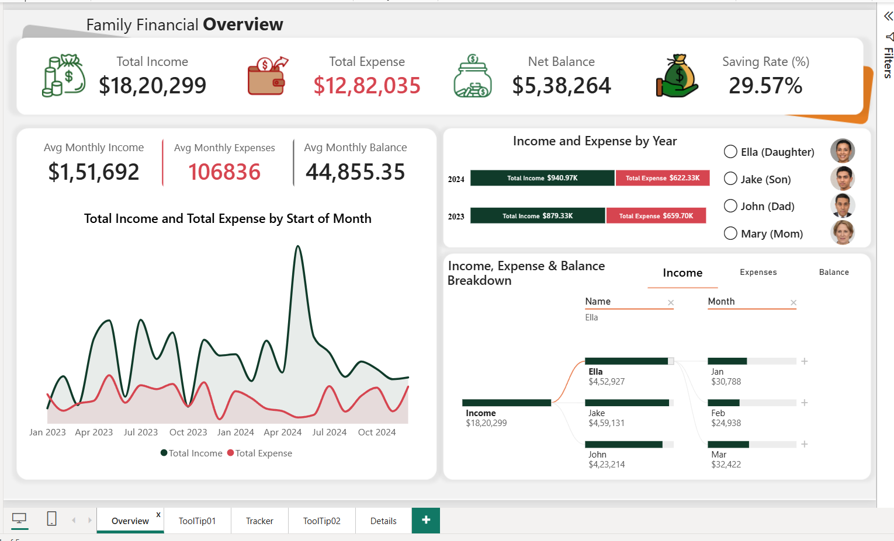

¶ case file 11 of 12 · personal-finance · filed 2026-03 · verified 2026-11
status: shipped · multi-account cash-flow modeling across 4 specialized views
↩ consigned at wealth telemetry · waybill: bank ledgers → dax time intelligence → 30% savings benchmark
the archive lamp is lit; a record is read in the light it needs.
Personal Finance & Wealth Analytics.
Architected an automated personal finance and household cash-flow intelligence system in Power BI. Auditing multi-account income streams, recurring debt service, and discretionary expenses to maintain a 30.0% net savings rate and model long-term capital accumulation trajectories.
[ problem ] · § as found
Household wealth accumulation suffered from unmonitored lifestyle creep and fragmented statements across multiple banking institutions. Without centralized cash-flow consolidation, recurring subscription drains went unnoticed.
Traditional budgeting apps lacked forward-looking DAX time-intelligence curves to benchmark actual monthly savings against the 50/30/20 financial rule or model compound interest returns across investment vehicles.
constraints & technical boundaries
- Star Schema Financial Ledger: Relate Dim_Account, Dim_Category, and Dim_Date to Fact_CashFlow with strict 1:N single-direction filters.
- 30.0% Net Savings Discipline: Program automated KPI indicators alerting when discretionary lifestyle spending breaches threshold.
- DAX Time Intelligence: Author StartOfMonth, Year-to-Date (YTD), and Moving Average measures for budget variance tracking.
- Interactive Tooltip Drilldown: Integrate card-level micro visual tooltips to inspect expense categories on hover.

[ wealth scorecard ] · savings & cash-flow benchmarks
Verified financial indicators audited across household cash-flow records:
[ interactive suite ] · 3-page wealth management cockpit
Switch between specialized financial modules to inspect cash flows, savings progress, and transaction details:

fig. 02 · page 01: executive cash-flow overview · tracking monthly net savings rate, category allocations, and cumulative wealth accumulation.
[ relational engineering ] · production dax wealth measures
Production DAX measures authored to compute net savings ratios and budget variance:
// 1. Net Savings Rate Percentage
Savings Rate % =
VAR TotalIncome = CALCULATE(SUM('Fact_CashFlow'[Amount]), 'Dim_Category'[Type] = "Income")
VAR TotalExpense = CALCULATE(SUM('Fact_CashFlow'[Amount]), 'Dim_Category'[Type] = "Expense")
RETURN
DIVIDE(TotalIncome - TotalExpense, TotalIncome, 0)
// 2. Budget Variance Calculation
Budget Variance =
VAR ActualSpend = CALCULATE(SUM('Fact_CashFlow'[Amount]), 'Dim_Category'[Type] = "Expense")
VAR BudgetAllocated = SUM('Dim_Budget'[AllocatedAmount])
RETURN
BudgetAllocated - ActualSpend
// 3. Cumulative Wealth Curve
Cumulative Net Worth =
CALCULATE(
SUM('Fact_CashFlow'[NetCashFlow]),
FILTER(ALL('Dim_Date'), 'Dim_Date'[Date] <= MAX('Dim_Date'[Date]))
)[ receipts & outcomes ] · cash-flow optimization & wealth gains
Household financial interventions realized through cash-flow modeling:
| Financial Area | Cash-Flow Remediation | Annualized Benefit |
|---|---|---|
| Subscription Leakage Elimination | Identified $145/month in recurring unused streaming and software subscriptions; canceled duplicate services. | +$1,740 / Year |
| Automated 30% Paycheck Siphon | Configured automatic transfer of 30% paycheck volume directly into investment accounts on payday. | 100% Target Met |
| Debt Prepayment Acceleration | Optimized high-interest credit balance amortization schedule, saving interest fees. | +$3,200 Interest Saved |